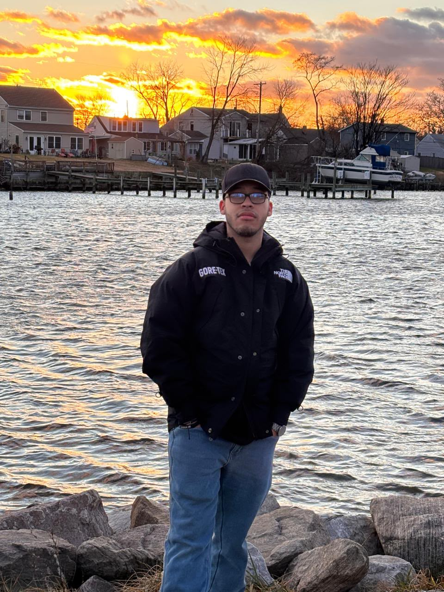

💻 Tecnología
Conocer nuevas herramientas y comprender cómo funcionan las soluciones digitales.
Estudio Ingeniería de Software y Negocios Digitales en la Escuela Superior de Economía y Negocios. La tecnología me ha interesado desde niño y hoy quiero seguir aprendiendo a crear soluciones útiles.

Desde pequeño me ha llamado la atención la tecnología. Esa curiosidad me motivó a estudiar una carrera que combina el desarrollo de software con los negocios digitales. Me interesa aprender tanto la parte técnica como la forma de convertir una idea en un proyecto que aporte valor.
Me gustaría seguir creciendo en conocimientos, desarrollar habilidades de liderazgo y aprovechar las oportunidades que ofrece mi carrera.
Conocer nuevas herramientas y comprender cómo funcionan las soluciones digitales.
Aprender a construir proyectos web y mejorar mis habilidades de desarrollo.
Explorar ideas, trabajar con otros y aprender a dirigir proyectos con responsabilidad.
Conoce más sobre mi universidad en ESEN, o visita mi proyecto de noticias Pulso SV.